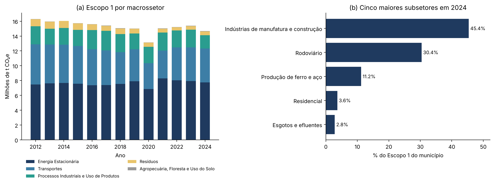

Análise Exploratória das Emissões de Gases de Efeito Estufa (GEE) na Cidade do Rio de Janeiro: Uma Abordagem FAIR-Compliant
Palavras-chave: Engenharia de Dados; Análise Exploratória; Gases de Efeito Estufa; Princípios FAIR; Python.
1. Introdução
A transição para matrizes energéticas sustentáveis e a mitigação das emissões de Gases de Efeito Estufa (GEE) representam desafios primordiais para as grandes metrópoles. Na cidade do Rio de Janeiro, monitorar esses indicadores é vital para o cumprimento de metas climáticas internacionais. O presente projeto visa aplicar técnicas de Engenharia de Dados para auditar e visualizar o comportamento dessas emissões na última década.
Para guiar a análise exploratória e a extração de insights do conjunto de dados, foram estabelecidas as seguintes Perguntas de Pesquisa (Research Questions - RQ):
- RQ1: Como o volume total de emissões de GEE (t CO2e) no Rio de Janeiro evoluiu ao longo do período (2012-2024)?
- RQ2: Quais são os macrossetores que atuam como os principais ofensores de emissões diretas (Escopo 1)?
- RQ3: Ao analisar as emissões indiretas por aquisição de energia (Escopo 2), qual a proporção de responsabilidade dos subsetores Residencial e Comercial?
2. Metodologia e Pipeline de Dados
A fonte de dados primária foi extraída do portal de dados abertos da prefeitura, o Data.Rio. O arquivo original (3696.xls) apresentava um formato wide com cabeçalhos multinível, dificultando a ingestão direta por ferramentas de BI e bibliotecas estatísticas.
Para o tratamento, desenvolveu-se um script de ETL em Python (src/etl.py) que utilizou a biblioteca Pandas. O processo aplicou a técnica de forward fill para reconstruir anos mesclados, seguido da função pd.melt(), que transformou as múltiplas colunas de anos e escopos numa estrutura long format contendo variáveis limpas: ano, setor, escopo e emissao_tCO2e. Operações de casting garantiram a tipagem correta para exploração numérica contínua.
3. Resultados e Discussão
3.1. Evolução Temporal das Emissões (RQ1)
O gráfico abaixo exibe a linha de tendência do somatório geral de emissões de t CO2e na cidade. Observa-se o comportamento macro do município em relação a esforços de mitigação ao longo da década, permitindo identificar picos ou vales associados a eventos econômicos ou políticas ambientais.

3.2. Principais Ofensores de Emissões Diretas - Escopo 1 (RQ2)
Ao isolar o Escopo 1 (emissões físicas ocorridas dentro dos limites da cidade), a agregação aponta os setores mais críticos. Os transportes, em especial o modal rodoviário, costumam liderar esta categoria devido à forte dependência de combustíveis fósseis (diesel e gasolina) na logística e mobilidade urbana carioca.

3.3. Matriz Energética: Residencial vs Comercial - Escopo 2 (RQ3)
O Escopo 2 reflete a emissão indireta gerada pela produção da energia elétrica consumida. A comparação entre os subsetores "Residencial" e "Comercial" demonstra o balanço de demanda energética da cidade. Variações anuais nestas curvas são frequentemente explicadas por crises hídricas (que acionam termelétricas, aumentando o fator de emissão do SIN - Sistema Interligado Nacional) e por dinâmicas de home office e reabertura do comércio.

4. Conclusão
O presente estudo demonstrou a eficácia da aplicação de técnicas de engenharia de dados em Python para o tratamento de planilhas governamentais não estruturadas. A análise exploratória confirmou a necessidade de políticas focadas na descarbonização da frota rodoviária (Escopo 1) e em medidas de eficiência energética para residências e comércio (Escopo 2). Como limitação, o estudo restringe-se aos dados reportados pelo município. Trabalhos futuros poderiam cruzar esses indicadores com dados do PIB municipal para analisar a intensidade de emissões por atividade econômica.
5. Disponibilidade dos Dados e Declaração FAIR
Este projeto foi construído em estrita observância aos Princípios FAIR:
- Findable (Localizável): Repositório documentado e estruturado.
- Accessible (Acessível): Código aberto e dados disponíveis sem necessidade de autenticação.
- Interoperable (Interoperável): Dados processados persistidos em padrão aberto (CSV) acompanhados de um
data_dictionary.md. - Reusable (Reutilizável): Ambiente isolado através do
requirements.txte licenciado via MIT.
Para reproduzir o ambiente integralmente (via terminal Bash/PowerShell):
git clone https://github.com/SEU-USUARIO/SEU-REPOSITORIO.git
cd SEU-REPOSITORIO
python -m venv .venv
# Ativar o ambiente (dependendo do OS)
pip install -r requirements.txt
python src/etl.py6. Referências
- DATA.RIO. Emissões de gases de efeito estufa (GEE) da Cidade do Rio de Janeiro. Disponível em: https://www.data.rio. Acesso em: 2026.
- MCKINNEY, Wes. Data Structures for Statistical Computing in Python, Proceedings of the 9th Python in Science Conference, 2010.
- WILKINSON, M. D. et al. The FAIR Guiding Principles for scientific data management and stewardship. Scientific Data, v. 3, n. 160018, 2016.